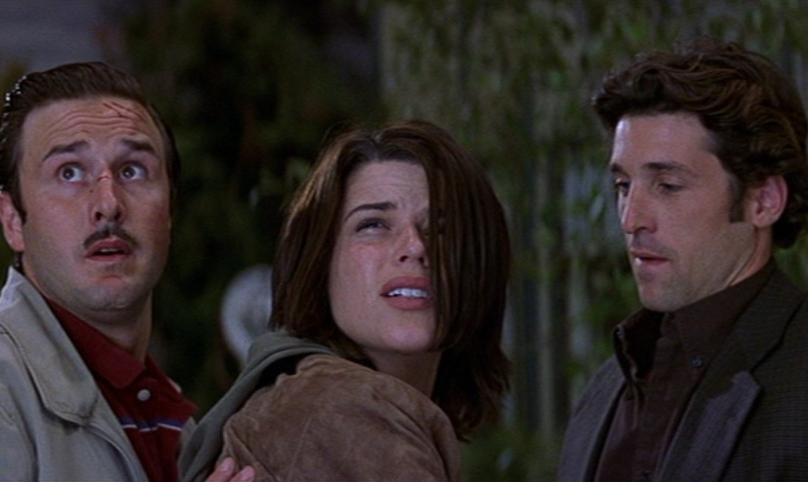

Cotton Weary, es llamado por Ghostface que exige el paradero de Sidney Prescott que ha pasado a esconderse desde los acontecimientos de Scream 2. Él se niega y su novia Christine y el son apuñalados y asesinados. El Detective Mark Kincaid se reúne con Gale Weathers, para discutir los asesinatos que la obligaron a viajar a Hollywood, donde se encuentra Dewey Riley trabaja como asesor en el rodaje de "Apuñalada 3", la tercera película dentro de una serie de películas basada en los asesinatos de Woodsboro. Después de Ghostface mata a la actriz de "Apuñalada 3" Sarah Darling que comienza a mofárse de Sidney por teléfono, después de haber descubierto su número de teléfono, lo que obligó a salir de su escondite y atrayéndola hacia Hollywood.
El resto de los actores de "Apuñalada 3" se reúnen en la casa de Jennifer Jolie, Ghostface mata a su guardaespaldas Steven Stone y utiliza un gas de fugas para causar una explosión a la casa, causando la muerte al actor Tom Prinze.
Dewey, Gale, Jennifer y el resto de los actores de "Apuñalada 3" Angelina Tyler y Tyson Fox, asisten a una fiesta de cumpleaños para el director Roman Bridger, donde son asesinados. Sidney obedece las órdenes de Ghostface de seguirlo a la mansión para salvar las vidas de Gale y Dewey. Sidney se enfrenta a Ghostface que es desenmascarado como Roman Bridger, después de haber fingido su muerte, y admite ser el medio hermano de Sidney, nacido de su madre Maureen Prescott cuando ella era una actriz de Hollywood. Roman cuenta los detalles de cómo al encontrar a su mamá Maureen, ella lo rechazó y se vengo al convencer al novio de Sidney Billy Loomis con matarla, lo que desató los acontecimientos de Scream y Scream 2. Sidney y Roman luchan hasta que Sidney mata a puñaladas a Roman pero no muere así que Dewey lo mata con un balazo a la cabeza.
Al final, Dewey le propone matrimonio a Gale, que acepta, y Sidney sigue adelante con su vida.
